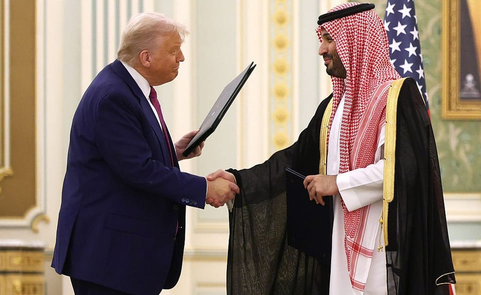

世界苦茶05月14日新闻 | 36条 | 习近平卢拉在北京会面

习近平卢拉在北京会面 | 中国放松稀土出口管制取消波音禁令 | 印度对美国呈现强硬姿态 | 孟加拉前执政党被禁参选 | 沙特承诺投资美国6000亿美元
三个水枪手
苦茶数据
美元兑人民币：7.21（昨日7.18，前日7.22）
美元兑日元：147.15（昨日147.85，前日146.05）
上证指数：3372（昨日3371，前日3360）
标普500指数：5886（昨日5844，前日5659）
比特币：103710（昨日102626，前日103917）
布伦特原油：66.33（昨日64.83，前日64.29）
中国新闻
• 长沙地下代孕被查封 ：县卫健局通报，涉事场所已经被查封。打拐志愿者上官正义星期一在微博发文称，根据线索，有代孕机构疑在长沙县安沙镇龙华岭村别墅内，开展地下取卵、胚胎移植等违法行为。上官正义续称，该涉事团伙分工明确，反侦查和防范意识极强，采用多辆无牌车辆通过转运的方式在长沙县、开福区运送卵妹代妈，每天都有4-10人在此手术。
• 中国约谈外卖平台 ：中国官方通报，针对当前外卖行业竞争中存在的突出问题，约谈外卖平台企业。中国国家市场监督管理总局星期二在官网公布，市场监管总局会同中央社会工作部、中央网信办、人力资源社会保障部、商务部，针对当前外卖行业竞争中存在的突出问题，约谈京东、美团、饿了么等平台企业。这五部门要求相关平台企业严格遵守《中华人民共和国电子商务法》《中华人民共和国反不正当竞争法》《中华人民共和国食品安全法》等法律法规规定，严格落实主体责任，主动履行社会责任，加强内部管理，合法规范经营，公平有序竞争。
• 习卢拉会晤反对霸凌 ：中国国家主席习近平星期二与到访中国的巴西总统卢拉会面时强调，中国和巴西两国要旗帜鲜明反对单边主义、保护主义和霸凌行径。据中国央视新闻报道，习近平下午在北京人民大会堂，同赴华进行国事访问的卢拉举行会谈。习近平强调，深化“一带一路”倡议同巴西发展战略有效对接，发挥好两国各项合作机制作用，加强基础设施、农业、能源等传统领域合作，拓展能源转型、航空航天、数字经济、人工智能等合作新疆域，为两国务实合作打造更多亮点。习近平也说，两国要加强在联合国、金砖国家、中拉论坛等多边机制中的协调配合，共同坚持多边主义、完善全球治理、维护国际经贸秩序。
• 习支持拉美多边话语权 ：在中美贸易紧张局势趋缓之际，中国国家主席习近平表示，中国支持拉美和加勒比国家扩大在多边舞台上的影响力。综合新华社和路透社报道，习近平星期二在北京出席中国－拉美和加勒比国家共同体论坛第四届部长级会议开幕式，并发表讲话。习近平在开幕式上说，很高兴新老朋友相聚一堂，并称去年中国与拉丁美洲的贸易额首次超过5000亿美元。
• 中柬军演舰艇靠港 ：中国解放军海军071型综合登陆舰长白山舰，星期一在柬埔寨云壤港靠泊。据解放军报微信公众号报道，中柬“金龙-2025”联合演习中国参演部队，在星期一上午搭乘长白山舰抵达云壤港。报道称，此次长白山舰靠泊，是中柬云壤港联合保障和训练中心挂牌运行后，首次保障中柬联合演习。
• 台邦交国出席中拉会议 ：台湾在拉美地区的两个邦交国海地与圣卢西亚出席了在北京召开的中拉论坛部长级会议，凸显中国大陆持续加强对台湾的外交施压。据路透社报道，目前台湾仅与12个国家维持正式外交关系，其中海地和圣卢西亚出席了在北京举行的中拉论坛部长级会议。海地由外交部长巴蒂斯特与会，圣卢西亚则由外交官兰西科特与会。路透社记者在会议现场看到，海地和圣卢西亚的国旗出现在主会场，但没有看到仍与台湾维持邦交关系的其他拉共体成员国，如危地马拉和伯利兹的国旗。
• 中取消波音禁令 ：彭博社星期二引述知情人士透露，在中美贸易谈判取得突破后，中国已取消了对航空公司接收美国波音飞机为期一个月的禁令。知情人士说，北京官员本周已开始通知国内航空公司和政府机构，美国飞机的交付可以恢复。其中一名知情人士补充说，航空公司有权自行决定按照时间和条款安排交付。彭博社报道称，恢复对华交付将给波音公司带来直接的提振。
• 李嘉诚回应港口交易争议 ：香港首富李嘉诚旗下长江和记集团出售巴拿马港口的交易，在过去两个月备受舆论关注。该集团星期一主动发声明回应，强调交易绝不可能在任何不合法或不合规的情况下进行。综合《明报》、《星岛日报》、香港无线新闻报道，长和星期一晚发声明称，原本计划在5月22日的股东周年大会上讲述港口交易的情况，但鉴于近日不断有股东及传媒查询，特此作出回应。长和说，这项交易绝不可能在任何不合法或不合规的情况下进行，并称有关条文已在今年3月4日的公告中说明，交易的完成取决于一系列条件的达成，包括法律和监管部门的同意及批准、不存在违法或法律禁止的情况、获得公司股东的必要批准，以及最终文件中约定的其他适当及常规条件。
• 华人学生在日遭霸凌 ：不谙日语的小学生，随父母迁居日本半年后，突然以日语冒了一句“细菌人”。辅导员追问下，才知道男生被同学霸凌。日本学校霸凌问题严重，去年被举报的案例就有73万2568起，较前一年增加了5万多起。好些随家人移民到日本的孩童，因语言和生活习惯不同，也都成了被霸凌的对象。在日本多所公立中小学担任过辅导员的小林香馨留意到学校里有越来越多来自不同国家的孩子，好些难以适应环境。她告诉《联合早报》：“学校虽然有不同语言的辅导员，但随着到日本的移民增加，欺凌案例堆积如山。”
亚太印太新闻
• 台通过核电延寿法案 ：台湾立法院三读通过《核子反应器设施管制法》修正案，将现行核电厂运转执照有效期最长年限，从40年延长为60年。综合台湾《联合报》《自由时报》报道，《核子反应器设施管制法第6条修正案》再修正动议条文，由蓝白阵营提出。根据三读通过条文，核子反应器设施运转执照有效期最长为40年，如果在期满后必须继续运转，经营者得在执照有效期届满前向主管机关申请换发执照，未照规定换发执照则不得继续运转。
• 张美兰愿还地产避死刑 ：越南房地产大亨张美兰的律师说，为逃避数十亿美元诈骗案的死刑判决，张美兰承诺将名下的房地产偿还挪用的资产。法新社报道，张美兰的律师星期二说，张美兰在狱中致函一个由政府监管、负责管理她财产的委员会，内容提到她的资产被严重低估，可能给国家造成损失，并影响到她的权利。张美兰在信中提到，政府指定的一家公司对她的726项资产进行估值，其中几项是位于越南主要城市黄金地段的房地产项目，估值约为97亿美元。
• 孟加拉执政党被禁参选 ：由孟加拉被罢免总理哈西娜领导的孟加拉人民联盟被暂停政党注册，无法参加下届选举。路透社报道，孟加拉选举委员会在临时政府禁止孟加拉人民联盟的一切活动后，宣布暂停人民联盟的政党注册，这实际上等于禁止该党参加下届全国大选。此前，由诺贝尔和平奖得主尤努斯领导的临时政府在面临多日抗议活动后，依《反恐法》禁止人民联盟的所有活动。
• 泰国外游客同比下降1% ：最新数据显示入境泰国的外国游客人数较去年同期下降1.04%。路透社报道，泰国旅游部星期二说，自今年1月至5月11日，泰国已接待外国游客达1290万人次。
• 台首次实射海马斯火箭 ：台军自美国采购的海马斯多管火箭系统进行首次实弹射击演练时，两度发生讯号异常，但迅速被排除。综合台湾《联合报》和公视新闻网报道，台湾军方向美国采购29套M142型海马斯高机动性多管火箭系统，首批11套已于去年9月交付给陆军第十军团第58炮兵指挥部。台湾陆军星期一在屏东九鹏基地首次进行火箭系统的实弹射击验证，共出动11辆火箭发射车，发射33枚减程练习火箭。台湾防长顾立雄现身，监督实弹射击。
• 赖清德谈民主与专制选择 ：台湾总统赖清德说，台湾不必然在美国与中国大陆之间做选择，而是在民主宪政与专制独裁之间做价值选择。赖清德日前接受《日本经济新闻》专访，针对台日、台美、两岸关系、半导体产业及国际经贸局势等议题回应提问。台湾总统府和《日本经济新闻》星期二刊出专访内容。针对记者询问台湾如何在美国与中国大陆之间做选择，赖清德说，台湾和日本并不必然要在陆美之间选边站。台湾要选择的是：要走向民主宪政体制，还是倒退回专制独裁政体。
• 韩国瑜罕见动怒 ：台湾立法院长韩国瑜星期二前往议场准备主持议事时，发现现场无一位立委出席，罕见动怒。他要求朝野三党团自重，立即指派立委进场开会。综合台湾《联合报》和ETtoday新闻云报道，台湾立法院星期二召开院会，排定审查“住都中心114年度预算书案”。韩国瑜上午9时抵达议场准备主持会议，但在点名民进党召委张宏陆说明预算书内容时，发现张宏陆未到场，随后点名包括陈玉珍、王育敏、万美玲、鲁明哲及吴宗宪等多位立委，也都不在席。韩国瑜罕见动怒表示：“现在没有任何一位立法委员在现场，三个党团要负最高责任。这样审查法案，立法院绝对没有办法接受。请三个党团自律自重！请立刻派出立委到议场。”
• 印度在WTO提议对美钢铝关税实施报复性征税： 印度于本周一在世界贸易组织框架下，提议对美国的钢铁和铝关税采取报复性征税措施。美方以“保障措施”为由对印度出口的相关产品加征关税。根据WTO的一份通报，“这些保障措施将影响总额达76亿美元的印度对美出口商品，美国预计将因此征收19.1亿美元的关税。” 因此，印度提议暂停对美方部分产品的关税优惠待遇，并征收等额关税作为对等反制。今年4月，印度曾根据WTO《保障措施协议》向美方提出协商请求，反对美方对印度钢铝产品征税的决定。
• 卫星图像揭示印度打击后巴基斯坦空军基地受损情况： 最新公布的卫星图像显示，印度“朱砂行动”中精确空袭造成巴基斯坦拉瓦尔品第努尔汗空军基地结构性严重受损。由开源情报分析的图像显示，该基地跑道与设施遭受了大范围破坏。这些袭击是印度针对边境紧张局势升级所采取的更广泛军事回应的一部分。卫星图像为印度“精准克制”的军事行动提供了独立证据，在印巴双方各执一词的背景下提供了可视佐证。此次选定努尔汗基地为打击目标——该基地被视为巴基斯坦空军的后勤和指挥中枢——显示出印度具备打击战略节点的能力。这一事态发展加剧了本已因历史纷争、边境武装冲突和核风险而紧张的地区局势。
• 印度正式否认特朗普调解印巴停火说法： 印度周二再次明确拒绝美国前总统特朗普提出的调解克什米尔争端的提议，并表示印方一贯立场是，涉及该联邦属地的所有问题都应由印度和巴基斯坦双边解决。印度外交部回应称：“该项政策从未改变。众所周知，目前亟待解决的问题是巴基斯坦非法占领的印度领土的清除。”此外，印度政府否认了特朗普称其曾威胁停止与印巴之间贸易以促成“停火”的说法。“自5月7日‘朱砂行动’启动至5月10日双方达成停火谅解，其间印美两国领导人确有就军事局势发展进行交流，但从未讨论过贸易问题。”外交部指出。对于特朗普宣称“成功避免一场核战争”，印方也予以驳斥，强调印度的所有军事行动都完全在常规作战范畴之内，并警告他国不要轻信巴基斯坦关于“核动用”的虚张声势。尽管有报道称巴基斯坦国家指挥局将在5月10日召开会议，但印方指出，伊斯兰堡事后已公开否认相关“核因素”。面对特朗普不断重复的“调停停火”说法，印度政府再次重申，停火的具体时间、措辞和内容，是由两国总参谋长办公室于5月11日周六下午3:35通话中商定的。 （翻评：印度释放出一些列对美国不利的信息，包括邀请普京访问，钢铝反制，否定调停。）
科技新闻
• Manus平台开放注册 ：中国AI智能体平台Manus宣布，面向全球用户开放注册。Manus发布消息称，从星期一起向所有人开放，无需等待名单。所有用户每天可免费执行一项任务，消耗300积分，所有用户一次性获得1000积分奖励。Manus称，免费任务积分当日有效，不支持结转。平台目前也提供三档付费订阅方案，价格分别为每月19美元、39美元和199美元，用户可根据需求解锁更多访问权限、专属功能以及优先服务。
• 微软裁员3%影响7000人 ：微软周二宣布，将在所有级别、所有团队和所有地区裁员 3%。微软发言人在一份声明中表示：“我们将继续实施必要的组织变革，以使公司在充满活力的市场中占据最佳优势，从而获得成功。”截至 6 月底，微软在全球拥有 228,000 名员工，这意味着此举将影响近七千名员工。本次裁员的其中一个目标是减少管理层级。与今年早些时候基于绩效的裁员不同，最新的削减范围更加广泛 —— 影响公司不同级别、地域和团队，包括领英。
• 近半数受访者对社媒上虚假信息误以为真： 关于虚假和错误信息在社交平台上传播并成为社会问题一事，日本总务省13日公布了首次实际情况调查的结果。在实际存在15种虚假信息中，有 47.7%的受访者表示看过或听过其中的一种内容并误以为是 “真相”。鉴于用户容易相信虚假信息，总务省计划加强呼吁力度以提升理解力。调查就“众多沙丁鱼和鲸鱼被冲上岸是地震的前兆或影响”等虚假信息实施了调查。还获悉，接触到这些信息的四个人中有一个会告诉家人朋友，或者发布在社交平台上，使虚假信息扩散开来。关于传播虚假信息的理由，位列第一的是“内容令人震惊”，占到27.1%。此外，“觉得有趣” 以及 “觉得对别人有用”等回答也超过了20%。
财经新闻
• 软银实现年度盈利 ：软银集团星期二发布业绩显示，截至今年3月底的2024财年第四季度净利跃升124%，达到5172亿日元，全年净利也较上年同期由亏转盈，报1.15万亿日元，是四年来首次取得年度盈利。这主要受益于人工智能需求旺盛，带动创业投资估值及晶片业务销售走强。根据彭博社，软银旗下愿景基金由上年同期亏损大幅扭亏，取得季度盈利261亿日元。
• 京东营收超预期 ：京东星期二公布的季度营收超出市场预期，表明尽管美国关税和中国长期经济疲软影响了消费者信心，但市场对这家电子商务巨头的需求仍然稳定。综合路透社和腾讯科技报道，京东星期二公布，截至3月31日的季度总营收为3010.8亿元人民币，同比增长15.8%。其中，商品收入同比增长16.2%，服务收入同比增长14.0%。根据伦敦证券交易所汇编的数据，分析师此前预测该公司营收为2892.2亿元。
• 美团将在巴西投资10亿 ：中国外卖巨头美团将在未来五年内在巴西投资10亿美元，拓展国际业务。综合彭博社和中国《证券时报》报道，美团星期一在北京举行的中国-巴西商业研讨会上签署投资协议。该协议由巴西总统卢拉和美团创始人、CEO王兴共同见证签署。协议显示，美团将在未来几个月内，正式将其旗下外卖服务应用Keeta引入巴西，并计划五年内在巴西投入10亿美元支持该项目的发展。
• 中方批美芬太尼关税 ：中国外交部说，美国对中国加征芬太尼关税，将严重冲击中美在禁毒领域的对话与合作。中国外交部星期二举行例行记者会。法新社记者提问：能否提供下阶段中美经贸会谈的详细信息？是否计划讨论美方以芬太尼为由对中国出口产品征收的20%特别关税？中国外交部发言人林剑回应称，关于中美经贸高层会谈，中国主管部门已经发布消息。关于芬太尼问题，中国也多次表明，芬太尼是美国的问题，不是中国的问题，责任在美国自身。
• 人民币汇率升至六个月高点 ：在中美同意暂停贸易战，以及中国央行通过官方指导利率提供支持后，人民币兑美元汇率星期二跃升至六个月高点。美国和中国官员在瑞士日内瓦会谈后发表联合声明，承诺接下来90天互降此前加征的高关税，并表明将继续就经贸关系进行协商。据路透社报道，受上述消息影响，人民币兑美元汇率在境内和境外交易中突破7.2的关键水平，达到去年11月的水平。报道也提到，由于美国经济衰退风险消退，美联储近期降息的必要性降低，市场情绪受到提振，美元普遍上涨。
• 稀土出口管制或缓和 ：路透社引述中国业内的两名消息人士称，中美贸易战休战后，美国客户的稀土出口许可证可能更容易获得北京方面的批准，但中国完全取消稀土出口管制的可能性不大。作为对美国关税的反制措施之一，中国今年4月将七种稀土及相关产品列入管制清单。这意味着出口商在向中国境外销售稀土产品前须要申请许可证。虽然该措施适用于所有国家，但在贸易战期间，美国客户获得出口许可证的可能性似乎很小。
• 贝森特谈中美谈判框架 ：美国财长贝森特称，美国总统特朗普在2020年首次对华贸易战期间促成的协议，为中美两国即将展开的新一轮磋商提供了非常好的框架。据彭博社报道，贝森特星期二在沙特利雅得举行的沙美投资论坛上说：“我们并不是从零开始。我们已有一个框架，可以在此基础上继续推进。”当被问及中美贸易谈判中是否有禁区时，贝森特回答说：“所有议题都将被摆上谈判桌。”
俄乌战争
• 泽连斯基要求普京赴会 ：乌克兰总统顾问说，乌克兰总统泽连斯基只愿意与俄罗斯总统普京在土耳其举行会谈。路透社报道，乌克兰总统顾问星期二说：“除了普京，泽连斯基不会在伊斯坦布尔会见任何其他俄方代表。”泽连斯基也只会在普京出席的情况下，才参加星期四举行的会谈，因此要求克里姆林宫展现出寻求和平的诚意。
• 欧美观望俄乌会谈结果 ：知情人士称，在推动美国宣布对俄罗斯的新制裁之前，欧洲领导人准备先等待乌克兰总统泽连斯基与俄罗斯总统普京可能在土耳其进行的面对面谈判。彭博社报道，要求不具名的知情人士透露，美欧官员星期一进行沟通，美国明显希望为俄乌可能在星期四直接谈判创造机会，然后才决定是否对普京施加更大压力。知情人士说，如果普京拒绝与泽连斯基见面，或者俄罗斯星期四不同意立即无条件停火，那么欧洲领导人将敦促美国总统特朗普兑现他的制裁俄罗斯威胁。
其他新闻
• 美沙签6000亿美元协议 ：美国总统特朗普与沙特阿拉伯王储穆罕默德签署一项战略经济协议，沙特将向美国投资6000亿美元。路透社报道，特朗普星期二访问沙特，并与穆罕默德签署一项涵盖能源、国防、采矿等领域的协议。白宫说，沙特将向美国投资的项目包括近1420亿美元的最大军售协议，涵盖通用电气燃气轮机及能源解决方案，以及价值48亿美元的波音737-8型客机。
• 气候变化重创非洲 ：世界气象组织报告指出，极端天气和气候变化的影响正在全方位冲击非洲社会经济发展，加剧饥饿、不安全和流离失所情形的发生。新华社报道，根据世界气象组织星期一发布《2024年非洲气候状况》的报告，2024年是非洲最热或第二热的年份（取决于不同的数据集），平均地表温度比1991至2020年的长期均值高出约0.86摄氏度。过去十年，非洲经历了有记录以来最热的十年。2024年，环非洲大陆的海面温度达到了创纪录水平，大西洋和地中海的升温尤为快速。受海洋热浪影响的区域面积达到有测量记录以来的最大。世界气象组织秘书长绍洛在新闻公报中说，这份报告反映了“整个非洲大陆气候变化的紧迫性和不断升级的现实”。它还揭示出极端天气事件的一种显著状态——一些国家在全力应对暴雨引发的特大洪水，而另一些国家在遭受干旱和水资源短缺的持续困扰。绍洛表示，希望这份报告能激发集体行动，以应对日益复杂的气候挑战及其连锁影响。
• 加英加强双边关系 ：加拿大总理卡尼和英国首相斯塔默星期一通话，两人同意加强双方贸易、商业和国防关系。路透社报道，加拿大总理办公室发表声明说，卡尼和斯塔默还讨论致力于帮助乌克兰实现公正的和平。英国国王查尔斯三世和王后卡米拉将于5月26日至27日到加拿大访问。访问期间，查尔斯三世将出席在渥太华举行的加拿大议会开幕式，以此明确表明他对加拿大的支持。
• 美政府对哈佛大学再撤回4.5亿美元拨款： 特朗普政府正在削减向哈佛大学提供的另外 4.5 亿美元拨款，这是其针对这所美国最著名大学不断升级的施压行动的一部分。此项宣布之前，上个月约有22亿美元的拨款已被取消，美国教育部长琳达·麦克马洪上周也承诺，未来将停止向哈佛大学提供任何新的联邦拨款。该政府在周二的一封信中写道：“哈佛大学屡次未能正视其校园内普遍存在的种族歧视和反犹太骚扰问题。”这封信由该政府的反犹太主义特别工作组成员签署，该工作组一直在领导针对精英大学的行动。该信函点名批评了《哈佛法律评论》 ，指其在评估文章是否收录于该期刊时涉嫌种族歧视。
• 美国全球受欢迎度下降，新报告称： 根据周三发布的《2024年民主感知指数》，美国作为全球强权的受欢迎度正在全球范围内下降，特别是在穆斯林占多数的国家。该指数调查了53个国家约63,000名受访者，汇总了人们对民主、地缘政治和全球强权国家的看法。自2023年初以来，美国的国际声誉受到冲击，尤其是在穆斯林国家中，美国对以色列在加沙战争中坚定支持的立场引发了强烈分裂意见。如今，这一趋势也蔓延至欧洲。自拜登政府上任以来，西欧多个国家首次对美国的总体印象转为负面。从负面到正面再回到负面的这种波动，在德国、奥地利、爱尔兰、比利时和瑞士表现得尤为明显。